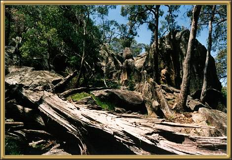

Photographer: Jean Stokes
This is Timor Rock in the Warrambungle National Park, located on the western slopes of the Great Divide. The scenery through here is absolutely spectacular and there are plenty of walking tracks. Although, looking at this photo, you wonder how the early explorers ever made it through!